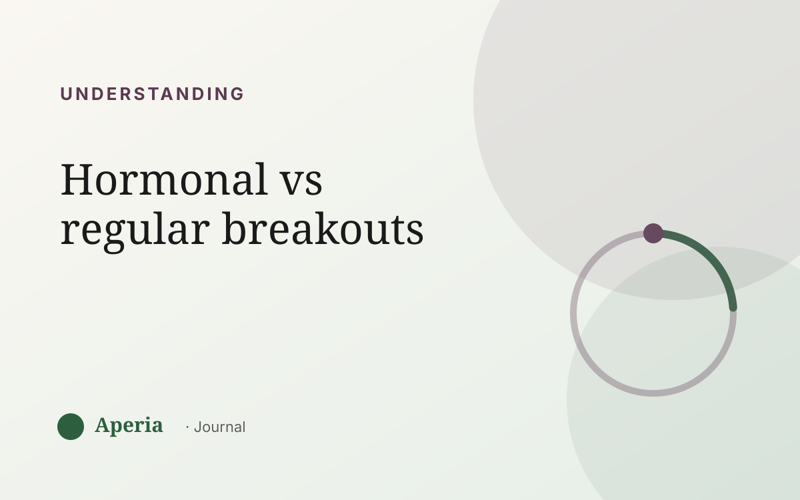

Understanding
Hormonal breakouts vs regular breakouts: how to tell
‘Hormonal’ gets used for almost any breakout these days, which makes it hard to know whether yours actually follows your hormones or is just the ordinary ups and downs of skin. The difference matters, because it changes how you respond. Here are the three tells.
Tell #1 — timing
This is the big one. Breakouts that follow your hormonal cycle tend to arrive in a predictable window — most often the week before your period — and settle down afterwards. If you can loosely predict when a flare will come, that regular rhythm is the signature of a hormonal pattern.
Tell #2 — location
Hormonally-driven breakouts tend to cluster in the lower third of the face: the chin and along the jaw, sometimes the lower cheeks. Ordinary breakouts are more scattered, or land wherever something irritated the skin — a new product, sweat under a helmet, a spot you kept touching.
Ordinary breakouts answer to what you did. Hormonal ones answer to where you are in your cycle.
Tell #3 — the pattern repeats
A one-off breakout after a stressful, low-sleep week, or after trying a new cream, is usually just cause-and-effect. A breakout that comes back to the same place at the same point in your cycle, month after month, is a pattern — and patterns are what point to hormones.
How to tell for sure
You can't diagnose this from a single week, and you don't need to. The reliable way is to track your skin next to your cycle for two or three months and look for the overlap. If your flares keep landing in the same cycle window and the same zone, you have your answer — in your own skin, not from a list on the internet.
Why it helps to know
Once you know a breakout is following your cycle, you stop chasing it with a new product every week and start giving your skin steady care while anticipating the flare week. That shift — from reacting to reading — is the whole point.
Common questions
How do I know if my breakouts are hormonal?
Look for three things together: timing that follows your cycle (often the week before your period), location on the lower face (chin and jaw), and a pattern that repeats month after month. Tracking your skin alongside your cycle for two to three months makes it clear.
Where do hormonal breakouts usually appear?
Most often the lower third of the face — the chin, the jawline and sometimes the lower cheeks — because the oil glands there are especially responsive to the hormonal shifts across your cycle.
Can men have hormonal breakouts too?
Yes. Hormones influence skin in everyone. Men don't have a monthly cycle, but hormonal shifts still affect oil production and breakouts, so the ‘hormonal’ label isn't only about the menstrual cycle.
Do hormonal breakouts go away on their own?
A cyclical flare often calms on its own once you move past that point in your cycle. The pattern tends to repeat, though, which is why understanding the timing is more useful than treating each flare as a one-off.
See your own skin pattern
Track your skin and your cycle together. Free to start.
Download on the App StoreAperia is a self-knowledge tool, not a medical service. It helps you understand and track your skin; it doesn't diagnose, treat or cure anything. If you're concerned about your skin, talk to a qualified professional.